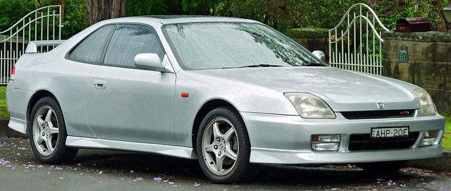

Prva Generacija (1978. - 1982.)

Prva generacija Honda Preludea počela se proizvoditi 1978. godine u Japanu. Dizajnirali su ga Shinya Iwakura i Hiroshi Kizawa kao niski sportski auto dugog prednjeg dijela i kratkog prtljažnika. Imao je 4 sjedala, iako su u njih stala samo malo veća djeca. Dizajn Preluda više je sličio mini-gran turismo automobilima. Suspenzija, kočnice i motor uzeti su od Honde Accorda. Inspiracija modela bio je uspjeh Toyote Celicae.
24. studenog 1978., Honda Prelude izbačen je na japansko tržište. Svjetska premijera Preludea bila je dva mjeseca kasnije, 1979., na AutoRAI motor šou u Amsterdamu. Prelude (uz Hondu Accord) bio je prvi auto s motor zapremnine manjim od 2 litre sa servo upravljačem. Prelude je također bio prvi Hondin model sa krovnim otvorom na pogon.
Uobičajeni motor na početku proizvodnje bio je 1.8 litreni redni četverocilindrični motor s 59 kW (79 hp) snage. U SAD-u se prodavao model s motorom snage 54 kW (72 hp). Moglo se birati između ručnog mjenjača s pet brzina te automatskih mjenjača s tri ili dvije brzine.
Prodalo se 313 000 Preludea iz prve generacije od 1978 do 1982. 80% automobila prodano je izvan Japana. Prva generacija nije zaživjela u Europi, ponajviše zbog svoje velike cijene.
Uglavnom, Prelude se iskazao kao dobar prvi pokušaj sportskog coupéa na prednji pogon.
Druga Generacija (1982. - 1986.)
Drugu generaciju Preludea dizajnirao je Masahito Nakano. Tijelo auta bilo je aerodinamičnije te su dodana skočna svijetla u prepoznatljivom stilu 80-ih. Bio je dizajniran kao sportski coupé budućnosti. Prednji dio je bio nešto kraći nego u prvoj generaciji te je automobil još uvijek bio nizak.
Druga generacija izašla je na japansko tržište 25. studenog 1982., a na svjetsko tržište u ožujke 1983. godine.
Dizajneri Preludea trebali su smjestiti novu suspenziju na prednji dio auta zbog zbijenijeg prednjeg dijela te su to učinili pomoću ovjesa s dvostrukim nosačima (eng. double wishbone suspension). Zbog nove redizajnirane suspenzije, Prelude je bio bolji i brži u zavojima te je opravdao svoj sportski naziv. Kupci su također imali opciju uzeti Hondinu novu tehnologiju „A.L.B“ što je zapravo samo ABS.
Druga generacija dobila je veliko poboljšanje u snazi motora. U početku se Prelude prodavao s 1.8 litrenim rednim četverocilindričnim „A18A“ motorom koji je proizvodio 77 kW (103 hp) snage. Kasnije je u Japanu, Aziji i Europi Prelude bio dostupan s 2 litrenim „B20A DOHC“ motorom. Japanska verzija dostizala je 118 kW (158 hp). Kupci su mogli birati između ručnog mjenjača s pet brzina i automatskog s četiri. Druga generacija Preluda bila je značajno brža od prve, postižući 100 km/h ispod 9 sekundi.
Sve novosti učinile su drugu generaciju moderniju izgledom, aerodinamičniju, bržu i zabavniju za voziti od prve generacije. Prelude je tada postao pravi hit prodavajući više primjeraka u SAD-u nego što je prva generacija prodala u cijelom svijetu. U SAD-u se također počela prodavati „sport injected“ tj. „Si“ verzija koja je imala novi sustav ubrizgavanja goriva.
Treća Generacija (1987. - 1991.)
Treću generaciju Preludea dizajnirali su Masato Nakano, Tomoyuki Arai i Yusuke Saito. Masato Nakano je dvije godine kasnije dizajnirao legendarnu Hondu NSX za koju se ispostavilo da dijeli dosta naznaka dizajna s trećom generacijom Preludea. Skočna svijetla ponovo se pojavljaju na Preludeu, te je auto bio još aerodinamičniji od druge generacije sa koeficijentom otpora zraka 0.34. Auto je bio vrlo nizak i lagan što ga je činilo još sportskijim te stabilnijim i lakšim u zavojima. 1989. u Japanu je izašla Prelude INX koji je zapravo samo treća generacija bez skočnih svjetla.
Treća generacija izašla je na japansko tržište 9. travnja 1987., ostatak svijeta je mogao kupiti treću generaciju krajem 1987., a sjevernoameričko tržište 1988.
Trećom generacijom, Prelude postaje premium auto zbog novih tehnologija. Sada su i prednje i zadnje suspenzije imale ovjes s dvostrukim nosačima (eng. double wishbone suspension) zbog čega je Prelude bio još bolji u zavojima. No budući da je Prelude auto na prednji pogon (koji inače nisu jako dobri u zavojima), dizajneri Honde stavili su prvi mehanički sustav upravljanja na četiri kotača u automobil koji se masovno proizvodio. Sustav upravljanja na četiri kotača omogućuje veći luk skretanja zbog čega je Prelude bio još bolji u zavojima. U magazinu „Road&Track“ Prelude je pobijedio svaki auto u slalomu. Imao je veću brzinu od Porschea i Ferrarija. Prelude je 1987. godine bio auto godine „Wheels magazina“.
Prelude se ove generacije prodavao isključivo s Hondinim 2 litrenim B20A motorima koji su proizvodili od 76 kW (104 hp) do 117 kW (160 hp). Bio je dostupan s ručnim mjenjačem s pet brzina i automatskim mjenjačem s četiri brzine. 1989. treća generacija je dobila redizajn: SiTCV i SiStates. Oni su bili više premium verzija treće generacije. Imali su sustav upravljanja na četiri kotača, ALB, TCS i mjenjač s diferencijalnim ograničenjem proklizavanja (eng. limited-slip differential transmission) zbog kojeg je auto bio još bolji u zavojima i manje proklizivao. Također je imao bolju zvučnu izolaciju i volan od kože.
S razlogom je treća generacija Preludea jedna od najomiljenijih i najpoznatijih. Od prekrasnog izgleda sa skočnim svjetlima, do odličnog skretanja i jakog motora. Nakon ove generacije, Prelude se polako počeo bližiti svom kraju.
Četvrta Generacija (1991. - 1996.)
Četvrtu generaciju Preludea dizajnirao je Yukio Kurosu. Nažalost, ova generacija označava kraj skočnih svjetala popularnim u prijašnjem desetljeću. Sam izgled automobila bio je više uobličen te mu je zadnji dio bio malo povišen. Prednji dio izgleda prilično slično Hondi Ascot Innova ili Nissanu Siliviji. Unutrašnjost automobila bila je zamišljena futuristički s brzinomjerom koji se prostirao ispod cijelog vjetrobrana. Četvrta generacija Preludea je u Japanu također imala digitalni sustav kontrole klime.
Ovaj Prelude bio je oko 200 kg teži od prošle generacije, no iako je Prelude klasično auto na prednji pogon, Hondini inženjeri uspjeli su napraviti da četvrta generacija ima samo 58% težine na prednjem dijelu zbog čega je auto bio vrlo balansiran u zavojima i pri akceleraciji. Mehaničko upravljanje na četiri kotača ove generacije je postalo automatsko. Također su unaprijedili kočione sisteme.
19. rujna 1991. četvrta generacija Preludea postaje dostupna za kupovinu na japanskom tržištu, a rane 1992. i u Europi.
Jedno od najbitnijih unaprjeđenja četvrte generacije jest VTEC motor. 1993. na svijetsko tržište izlazi VTEC verzija Preludea. Standardne verzije četvrte generacije imale su redni četverocilindrični 2.1 litreni motor, dok je VTEC verzija motora bila 2.2 litrena. U Japanu VTEC verzija je proizvodila 147 kW (197 hp), na Sjevernoameričkom tržištu 140 kW (187 hp), a na europskom tržištu 136 kW (182 hp). Zbog toga je ova generacija Preludea uspijevala postići 100 km/h u 7.2 sekunde. Četvrta generacija Preludea imala je opciju ručnog mjenjača s pet brzina i automatskog s četiri brzine.
Četvrta generacija Preludea nastavila je s premium pogodnostima. Nudilo se grijanje stakala i retrovizora, grijanje sjedala, automatsko zatvaranje retrovizora te zvučni sistem s osam zvučnika.
Prelude je ove generacije imao najsportskiji izgled zbog čega je najpopularniji među obožavateljima trkaćih automobila iz 90-ih. Također se zbog svoje snage motora i pokretljivosti u zavojima koristio kao sigurnosni automobil na Velikoj Nagradi Japana 1994. u Formuli 1.
Peta Generacija (1996. - 2001.)
Petu i zadnju generaciju Honde Preludea dizajnirao je Manabu Konaka. Ova generacija Preluda je nekako najomraženija zbog dizajna prednjih svjetala i prednjeg branika. Dizajneri su čak probali vratiti „kockastiji“ jer se četvrta generacija nešto slabije prodavala od treće, no to nisu izvršili uspješno. Za neke obožavatelje sportskih automobila, Prelude je izgledao preblago i bezopasno. Tijelo automobila je još uvijek bilo dugačko i nisko, no bio je nešto teži. Unutrašnjost pete generacije bila je potpuno obložena kožom.
Peta generacija Preludea imala je mnogo raznih vrsta koje su se prodavale na različitim tržištima. Nama su najbitnije one koje su se prodavale na japanskom i europskom tržištu. U Japanu najznačajniji model bio je Type S, a u Europi 2.2 VTi-S. Oni su imali Hondin najnoviji ATTS (aktivni sustav prijenosa zakretnog momenta) sistem koji je pomagao autu da manje proklizuje i bude bolji u zavojima.
Japanski Type S imao je redni četverocilindrični 2.2 litreni VTEC motor koji je proizvodio 162 kW (217 hp), dok je europski VTi-S imao redni četverocilindrični 2.2 litreni VTEC motor koji je proizvodio 147 kW (197 hp). Mjenjač je mogao biti ručni s pet brzina ili automatski s četiri brzine, no automatski mjenjač četvrte generacije je poznat prema tome što se često kvari.
Peta generacije Preludea nije se proslavila, samo 58 118 automobila se prodalo u SAD-u od 1997. do 2001. (Druga generacija je prodala 336 559). No, zašto je zadnja generacija Preludea podbacila? Najveći razlog je konkurencija drugih Hondinih modela. Većina Hondinih modela koštali su manje od Preludea, a jednostavno su imali više pogodnosti koje su odgovarale prosječnom kupcu. Obitelji bi radije kupovale Hondu Accord coupé, dok bi mladi ljubitelji automobila prije kupili Civic Si. Tako je najveći problem Preludea bio to što nisu znali na koje tržište ciljaju nakon velike popularnosti sportskih automobila u 80-ima. Prelude je bio preskup za mlade, a prenepraktičan za starije kupce.